1과목: 유통물류일반
1. 도매상에 대한 설명으로 가장 옳은 것은?
2. 유통경로(distribution channel)의 일반적 특성 설명으로 옳지 않은 것은?
3. 소매업태의 유형에 대한 설명으로 옳지 않은 것은?
4. 경로성과를 측정하는 차원 중 투입 대비 산출의 비율로 측정되며, 일정한 산출을 얻기 위해 얼마나 많은 비용이 투입되었는가를 말해줄 수 있는 척도로 옳은 것은?
5. 기업이 소비자에게 제품을 직접 판매하는 직접유통이 발생하게 된 이유로 가장 옳지 않은 것은?
6. 우리나라 유통업체의 영향력과 역할 변화에 대한 설명으로 옳지 않은 것은?
7. 아래 글상자의 유통경영환경 내용 중 거시환경에 속하는 것만을 모두 나열한 것은?
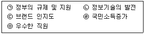
8. 물류채산분석에 대한 설명으로 가장 옳은 것은?
9. SWOT분석의 전략적 활용에 대한 일반적인 설명으로 옳지 않은 것은?
10. 기업형 수직적 유통경로시스템에 대한 설명으로 옳지 않은 것은?
11. 아래 글상자의 괄호 안에 알맞은 용어로 가장 옳은 것은?
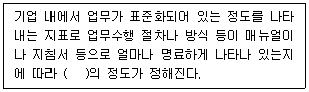
12. 유통시장 개방에 따른 국내 유통시장의 긍정적 영향에 대한 설명으로 옳지 않은 것은?
13. 조달물류를 효율적으로 달성하기 위한 방안 설명으로 옳지 않은 것은?
14. 기능별 물류비에 대한 설명으로 가장 옳지 않은 것은?
15. 리더십 상황이론에 대한 설명으로 옳지 않은 것은?
16. 조직문화에 대한 다양한 분류체계 중 로버트 퀸(Robert Quinn)의 경쟁가치모형에 포함되지 않는 것은?
17. 인사고과와 관련된 설명으로 가장 옳지 않은 것은?
18. 기업의 사회적 책임이 요구되는 이유로 가장 옳지 않은 것은?
19. 아래 글상자의 재고관리비용 중 재고유지비용에 해당되는 것만을 나열한 것으로 옳은 것은?
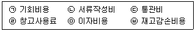
20. 아래 글상자에서 유통경로 상 여러 경로기관의 유통흐름유형에 대한 설명으로 옳은 것을 모두 고르면?
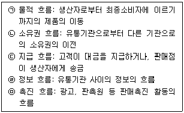
21. 해상운송 방식 중 부정기선 운송의 특징과 관련된 설명으로 옳지 않은 것은?
22. 물류공동화 추진을 어렵게 하는 요인으로 가장 옳지 않은 것은?
23. 기업의 재무성과 분석을 나타내는 여러 가지 비율에 대한 설명으로 옳지 않은 것은?
24. 소비자기본법(법률 제19511호, 2023.6.20., 일부개정)에서 제시하고 있는 국가 및 지방자치단체가 소비자능력향상을 위해 실행하는 내용으로 옳지 않은 것은?
25. 아래 글상자 내용은 공공창고 3가지 유형에 대한 설명이다. 옳은 것을 모두 고르면?
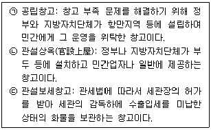
2과목: 상권분석
26. 점포를 중심으로 거리에 따라 상권을 구분하면 일반적으로 점포와의 거리가 증가할수록 점포의 영향력이 약화된다. 다음 중 소비자 흡인율이 가장 낮은 지역인 한계상권(fringe trading area)으로 가장 옳은 것은?
27. Huff모델을 통해 소비자의 점포선택확률을 계산하고자 할 때 소비자가 선택을 고려하는 점포에 대한 정보들을 활용한다. 다음 중 그 내용에 해당되지 않는 것은?
28. 입지와 상권의 개념을 구분하여 인식할 때 아래 글상자 내용 중 입지의 개념과 평가에 해당되는 것은?
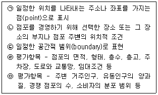
29. 상권의 개념이나 일반적 특성에 대한 설명으로서 가장 옳지 않은 것은?
30. 상권의 계층적 구조 형성에 대한 설명으로 가장 옳지 않은 것은?
31. CST(customer spotting technique) map을 통해 알 수 있는 정보로 가장 옳지 않은 것은?
32. 소매점포 상권의 크기를 결정하는 요인으로서 가장 옳지 않은 것은?
33. 아래 글상자에서 설명하는 입지대안을 평가하기 위한 원칙으로 가장 옳은 것은?
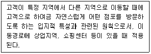
34. 신규점포를 개설할 때 시행하는 점포의 입지조건 평가와 관련한 내용들로 가장 옳지 않은 것은?
35. 폐업 시 반드시 지켜야 할 절차로 옳지 않은 것은?
36. 지역시장의 매력도를 평가하기 위해 활용하는 소매포화지수(RSI: retail saturation index)와 시장성장잠재력지수(MEP: market expansion potential)에 대한 설명으로 옳은 것은?
37. 상권분석에 관한 주요 이론들에 대한 설명으로 가장 옳지 않은 것은?
38. 소상공인시장진흥공단은 소상공인 및 소규모 창업자를 위하여 빅데이터를 활용한 상권정보시스템을 광범위하게 운영하고 있다. 이 상권정보시스템을 통하여 제공되는 정보로 옳지 않은 것은?
39. 공간균배에 의해 입지유형을 분류할 때 은행이나 가구점처럼 동일업종의 점포들이 모여 있으면 집적효과 또는 시너지효과를 거두는 입지유형으로서 가장 옳은 것은?
40. 현재시점까지 영업을 지속하고 있는 기존점포의 상권범위를 파악하기 위해 고객이나 거주자들로부터 자료를 수집하여 분석하는 조사기법으로 가장 옳지 않은 것은?
41. 상권 범위 내 소비자들이 특정점포를 선택할 확률을 근거로 예상매출액을 추정할 수 있는 상권분석 기법들로 가장 옳은 것은?
42. 소매점포의 상권분석이나 입지결정에 활용하는 통계분석 중 하나인 회귀분석에 대한 설명으로 가장 옳지 않은 것은?
43. 상가건물 임대차보호법(법률 제18675호, 2022.1.4., 일부 개정)과 동법 시행령에서는 법의 보호를 받을 수 있는 보증금액의 수준을 규정하고 있다. 이러한 환산보증금을 구하는 계산식으로 옳은 것은?
44. 점포개점 시 검토해야 할 점포규모와 관련된 내용으로 옳지 않은 것은?
45. 단일점포일 때와는 달리 소매점포가 체인화되는 과정에서는 점포망 전체 차원에서 점포를 추가로 개점하거나 기존 점포를 폐점하는 등 점포망 구성이 중요한 과제가 된다. 이러한 경우 사용할 점포망 분석기법으로 가장 옳은 것은?
3과목: 유통마케팅
46. 가격설정 정책 중 관습가격(customary price)정책에 대한 설명으로 옳은 것은?
47. 아래 글상자에서 설명하는 POP(point-of-purchase)진열방식으로 가장 옳은 것은?
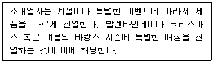
48. 효과적인 시장세분화에 대한 설명으로 옳지 않은 것은?
49. 수평적 마케팅 시스템(horizontal marketing system)에 대한 설명으로 옳지 않은 것은?
50. 커뮤니케이션 믹스 전략에 대한 설명으로 옳지 않은 것은?
51. 디지털 마케팅에서 기업 웹사이트나 모바일 앱 등 다양한 고객과의 접점에서 직접적 상호작용을 통해 자체적으로 수집한 자사 데이터를 지칭하는 용어로 옳은 것은?
52. 소매점의 성장전략 중 시장침투 전략에 대한 설명으로 옳지 않은 것은?
53. 아래 글상자에서 설명하는 소매업태의 변천과정 이론으로 가장 옳은 것은?
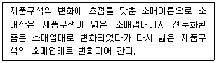
54. 소매점 머천다이징의 매입계획에 포함되는 내용으로 가장 옳지 않은 것은?
55. 아래 글상자에서 설명하는 용어로 옳은 것은?
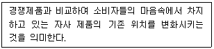
56. 다음 중 온라인 프로모션의 유형으로 가장 옳지 않은 것은?
57. 소매업체 대상 판촉프로그램에 대한 설명으로 옳지 않은 것은?
58. 온라인상의 마케팅 퍼널 모델(funnel model)에 대한 설명으로 옳지 않은 것은?
59. 고객관리를 위한 고객분석의 내용으로 옳지 않은 것은?
60. 유통마케팅 조사의 절차 중 조사설계에 해당하는 활동으로 가장 옳지 않은 것은?
61. 소매점포의 레이아웃 중 아래 글상자의 괄호 안에 들어갈 용어로 가장 옳은 것은?
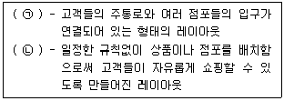
62. 다음 촉진 예산 결정 방법 중 상향식 접근방법으로 옳은 것은?
63. 상품 로스(loss)의 발생원인에 대한 설명으로 옳지 않은 것은?
64. 소매점의 정량적 성과분석을 위한 관리지수로서 옳지 않은 것은?
65. 플랫폼 비즈니스전략을 수립할 때 고려해야 할 사항으로 가장 옳지 않은 것은?
66. 서비스의 소멸성(perishability)을 극복하기 위한 서비스마케팅으로 가장 옳지 않은 것은?
67. 상품구매와 관련하여 고관여 상황에서 제품들 사이에 차이가 거의 없다고 판단할 경우 주로 나타나는 고객 구매행동으로 옳은 것은?
68. 아래 글상자에서 설명하는 매장 혼잡성 관리 전략으로 옳은 것은?
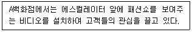
69. CRM 채널관리 이슈 및 기대효과에 관한 내용으로 가장 옳지 않은 것은?
70. 경쟁 점포와는 차별적으로 자사 점포가 대상으로 하는 고객이 가장 원하는 품종에 중점을 두거나, 가격에 대응하는 상품이나 품질을 차별화하는 방향으로 전개하는 머천다이징으로 옳은 것은?
4과목: 유통정보
71. 지리적, 공간적 제약을 극복하고 어디서 누구와도 연결이 가능하도록 해주는 광역컴퓨팅기술과 관련 있는 기술로 가장 옳지 않은 것은?
72. 유통업체가 수행하는 마케팅 활동 중 소비자가 특정 유형의 개인정보 처리에 대해 구체적이고, 명시적이며, 사전적 동의를 표시하는 별도의 조치를 취한 경우에만 개인정보를 수집해서 활용하는 유형을 의미하는 용어로 가장 옳은 것은?
73. 유통업체에서 ERP 시스템을 도입할 때, 구축 비용에 영향을 미치는 요인으로 옳지 않은 것은?
74. 유통정보시스템을 구축하려 한다. 구축 단계별 설명으로 가장 옳지 않은 것은?
75. 고객 충성도를 강화하기 위한 우수고객우대 프로그램에 대한 설명으로 가장 옳지 않은 것은?
76. 오늘날 유통업체에서는 블록체인 기술을 활용해 정보시스템을 구현하고 있다. 블록체인에 대한 설명으로 가장 옳지 않은 것은?
77. 고객관계관리(CRM)를 통해 수집된 자료를 분석하는 마이닝 기법과 그 설명이 가장 옳지 않은 것은?
78. EDI(electronic data interchange)와 관련된 설명으로 가장 옳지 않은 것은?
79. 데이터의 전략적 활용을 위해 사용하는 비즈니스 애널리틱스(business analytics)에 대한 설명으로 가장 옳지 않은 것은?
80. 유통업체에서 업무에 활용하고 있는 데이터시각화에 대한 설명으로 가장 옳은 것은?
81. 유통업체에서 활용하는 간편결제 방식에 대한 설명으로 가장 옳은 것은?
82. 우리나라의 바코드(EAN-13) 인쇄에 대한 내용으로 가장 옳지 않은 것은?
83. 아래 글상자의 괄호 안에 들어갈 용어로 가장 옳은 것은?
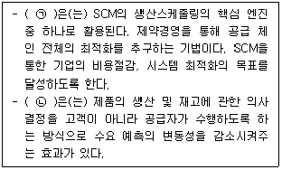
84. 유통정보혁명 시대에 있어서 유통업체에 요구되는 발전전략으로 가장 옳지 않은 것은?
85. 아래 글상자의 괄호 안에 들어갈 용어로 가장 옳은 것은?
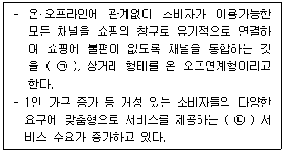
86. QR(quick response)코드에 대한 설명으로 옳지 않은 것은?
87. 아래 글상자에서 설명하는 용어로 가장 옳은 것은?
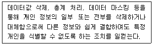
88. 아래 글상자에서 설명하는 용어로 가장 옳은 것은?
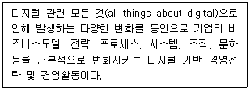
89. 유통업체에서 많이 활용되고 있는 정보기술에 대한 설명으로 가장 옳지 않은 것은?
90. 유통업체에서 마케팅을 위해 활용하고 있는 증강현실(augmented reality) 기술에 대한 설명으로 가장 옳지 않은 것은?